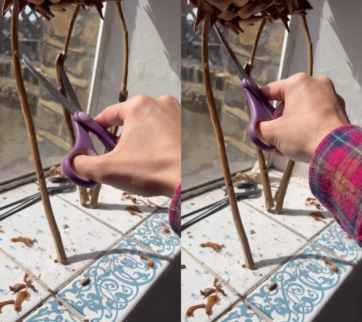

– / –
our mesh joint axis and pivot (toggle with ⟲) panel: one colour per part
Agentic optimisation timelapse
We demonstrate how the agent iterates on both reconstruction and pose on two selected frames of a video sequence over time.

– / –
Reconstructions on ARCTIC
– / –
our mesh GT left hand GT right hand
Reconstructions on HOT3D
– / –
our mesh GT left hand GT right hand